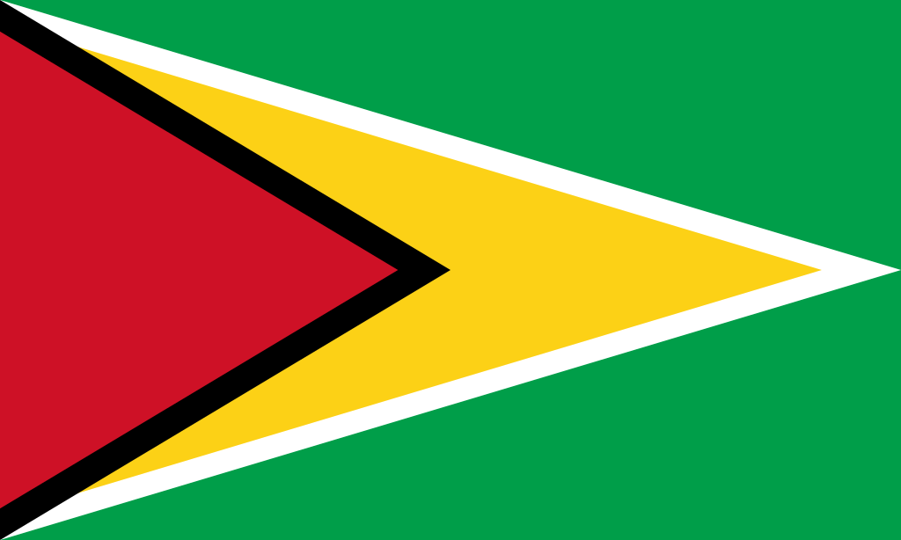
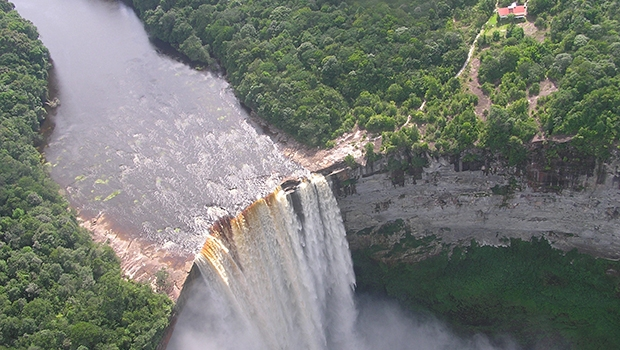
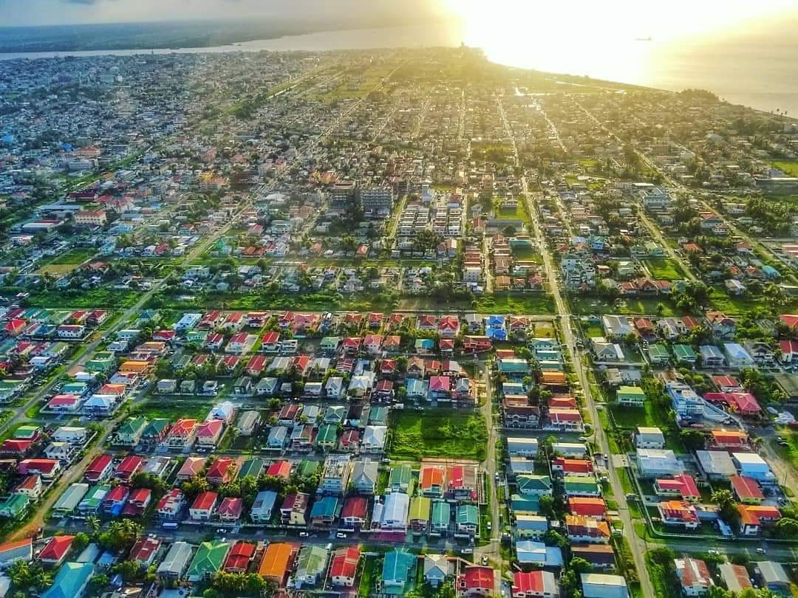

The Beautiful GUYANA
officially the Co‑operative Republic of Guyana, is a country on the northern mainland of South America and the capital city is Georgetown. Guyana is bordered by the Atlantic Ocean to the north, Brazil to the south and southwest, Venezuela to the west, and Suriname to the east. With 215,000 square kilometres (83,000 sq mi), Guyana is the third-smallest sovereign state by area in mainland South America after Uruguay and Suriname; it is also the second-least populous sovereign state in South America after Suriname.

The region known as "the Guianas" consists of the large shield landmass north of the Amazon River and east of the Orinoco River known as the "land of many waters". There are nine indigenous tribes residing in Guyana: the Wai Wai, Macushi, Patamona, Lokono, Kalina, Wapishana, Pemon, Akawaio and Warao. Historically dominated by the Lokono and Kalina tribes, Guyana was colonised by the Dutch before coming under British control in the late 18th century. It was governed as British Guiana, with a mostly plantation-style economy until the 1950s. It gained independence in 1966, and officially became a republic within the Commonwealth of Nations in 1970. The legacy of British rule is reflected in the country's political administration and diverse population, which includes Indian, African, Amerindian, Chinese, Portuguese, other European, and various multiracial groups. In 2017, 41% of the population of Guyana lived below the poverty line.

Guyana is the only South American nation in which English is the official language. The majority of the population, however, speak Guyanese Creole, an English-based creole language, as a first language. Guyana is part of the Anglophone Caribbean. It is part of the mainland Caribbean region maintaining strong cultural, historical, and political ties with other Caribbean countries as well as headquarters for the Caribbean Community (CARICOM). In 2008, the country joined the Union of South American Nations as a founding member.
